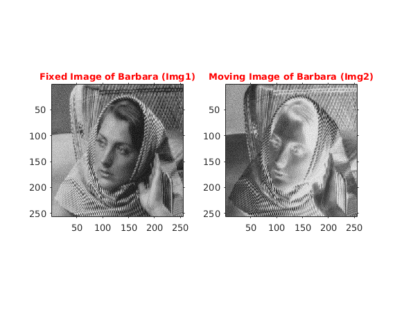
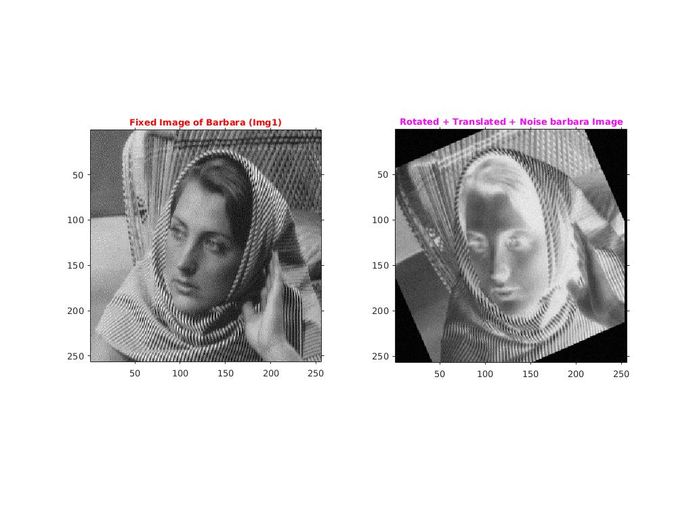
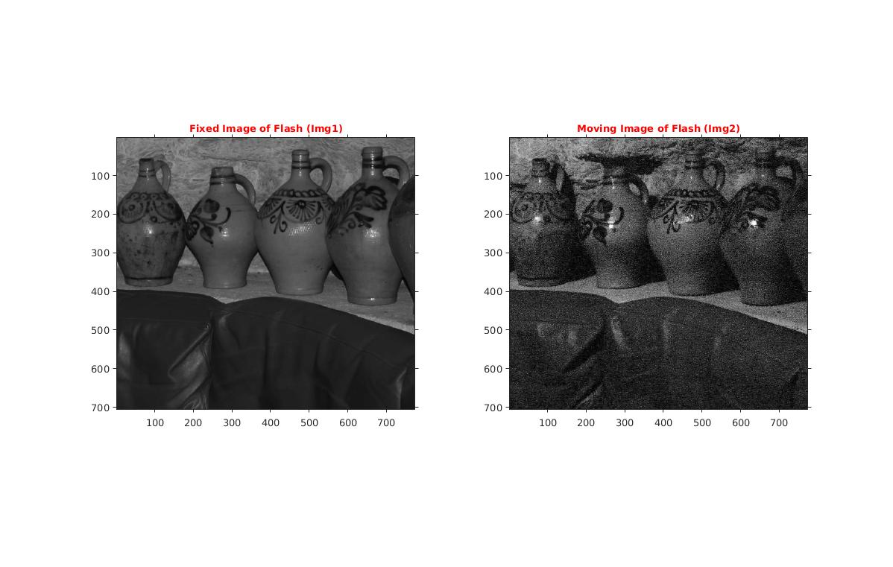
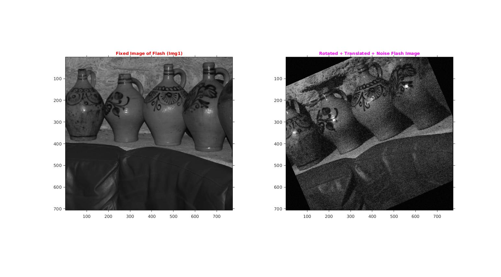
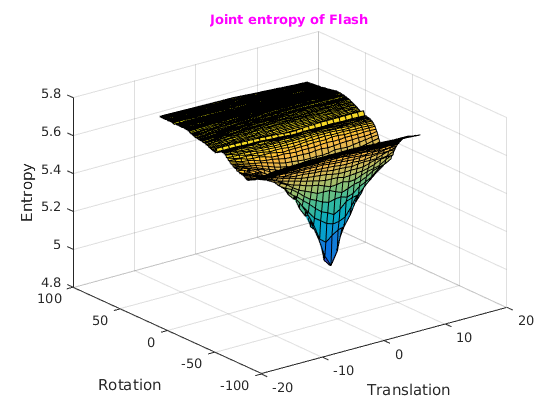
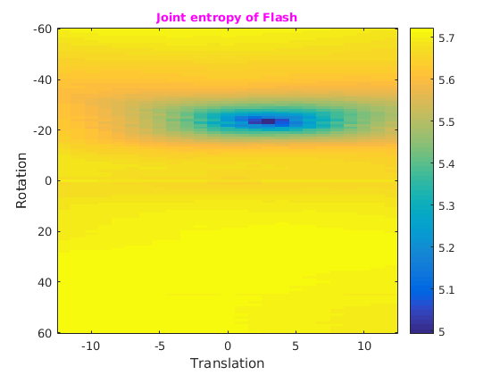
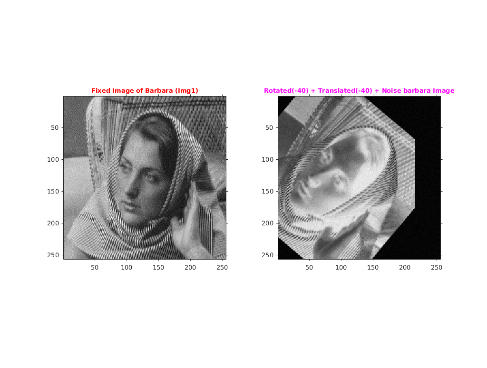
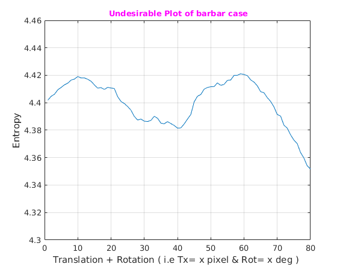
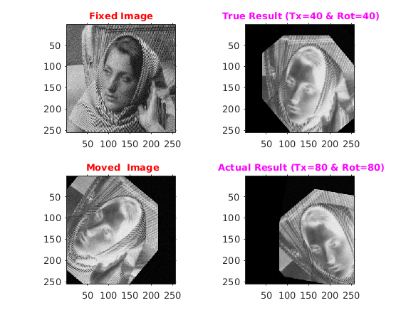

Rigid Motion Aligment using Joint entropy
Contents
Assignment2-3
Rollno: 163059009, 16305R011, 16305R001
1. Barbar Img
file='../input/barbara.png'; fixImg=imread(file); file='../input/negative_barbara.png'; movImg=imread(file); %Showing Original Image figure('name','Original Img: Barbara'); subplot(1,2,1); imshow(fixImg); title('\fontsize{10}{\color{red}Fixed Image of Barbara (Img1)}'); axis tight,axis on; subplot(1,2,2); imshow(movImg); title('\fontsize{10}{\color{red}Moving Image of Barbara (Img2)}'); axis tight,axis on;
1.1 Moving Barbara Img2
Rotation by: 23.5 deg Translation: -3 Add noise between [0,8]
rot=23.5; tran=[-3,0]; noise=8; movedBarbara=moveImage(movImg,rot,tran,noise); % Showing Rotated translated noised negative Barbara Image figure('name','Rotated translated noise barbara Image');subplot(1,2,1); imshow(fixImg); title('\fontsize{10}{\color{red}Fixed Image of Barbara (Img1)}'); axis tight,axis on; subplot(1,2,2); imshow(uint8(movedBarbara)); title('\fontsize{10}{\color{magenta}Rotated + Translated + Noise barbara Image}'); axis tight,axis on;
1.2 Finding Alignment
Finding Alignment using brute force
movImg=movedBarbara; rotRange=[-60,60]; transRange = [-12,12]; binSize=10; [entropyValueMatrix,minEntropyVal,minTheta,minTx] = findAlignment(movImg, fixImg,rotRange,transRange,binSize);
1.3 Plotting of Joint entropy
For barbara image theta = -23 tx=3 minValue=4.993399
Surface Plotting of joint entropy as a function of θ and tx
figure('name','joint entropy as a function of θ and tx'); [tansG,rotG]=meshgrid([transRange(1):transRange(2)],[rotRange(1):rotRange(2)]); surf(tansG,rotG,entropyValueMatrix); title('\fontsize{10}{\color{magenta}Joint entropy of Barbar}'); xlabel('Translation');ylabel('Rotation');zlabel('Entropy'); % Showing joint entropy as a function of θ and tx figure('name','joint entropy'); imagesc(transRange,rotRange,entropyValueMatrix); colorbar; title('\fontsize{10}{\color{magenta}Joint entropy of Barbar}'); xlabel('Translation');ylabel('Rotation'); axis tight,axis on; fprintf('For barbara image theta = %d tx=%d minValue=%f\n',minTheta,minTx,minEntropyVal);
For barbara image theta = -23 tx=3 minValue=4.993399

2. Flash image
file='../input/flash1.jpg'; fixImg=rgb2gray(imread(file)); file='../input/noflash1.jpg'; movImg=rgb2gray(imread(file)); %Showing Original Image figure('name','Original Img: Barbara'); subplot(1,2,1); imshow(fixImg); title('\fontsize{10}{\color{red}Fixed Image of Flash (Img1)}'); axis tight,axis on; subplot(1,2,2); imshow(movImg); title('\fontsize{10}{\color{red}Moving Image of Flash (Img2)}'); axis tight,axis on;
2.1 Moving Flash Img2
Rotation by: 23.5 deg Translation: -3 Add noise between [0,8]
rot=23.5; tran=[-3,0]; noise=8; movedFlash=moveImage(movImg,rot,tran,noise); % Showing Rotated translated noised negative Barbara Image figure('name','Rotated translated noise barbara Image'); subplot(1,2,1); imshow(fixImg); title('\fontsize{10}{\color{red}Fixed Image of Flash (Img1)}'); axis tight,axis on; subplot(1,2,2); imshow(uint8(movedFlash)); title('\fontsize{10}{\color{magenta}Rotated + Translated + Noise Flash Image}'); axis tight,axis on;
2.2 Finding Alignment
Finding Alignment using brute force Total computation time: 350.084115 seconds ~= 6 mins
tic movImg=movedFlash; rotRange=[-60,60]; transRange = [-12,12]; binSize=10; [entropyValueMatrixs,minEntropyVal,minTheta,minTx] = findAlignment(movImg, fixImg,rotRange,transRange,binSize); toc
Elapsed time is 350.084115 seconds.
2.3 Plotting of Joint entropy
For Flash image theta = -23 tx=4 minValue=4.464759
Surface Plotting of joint entropy as a function of θ and tx
figure('name','Joint entropy as a function of θ and tx'); [tansG,rotG]=meshgrid([transRange(1):transRange(2)],[rotRange(1):rotRange(2)]); surf(tansG,rotG,entropyValueMatrix); title('\fontsize{10}{\color{magenta}Joint entropy of Flash}'); xlabel('Translation');ylabel('Rotation');zlabel('Entropy'); % Showing joint entropy as a function of θ and tx figure('name','joint entropy'); %imagesc(entropyValueMatrix); imagesc(transRange,rotRange,entropyValueMatrix); colorbar; title('\fontsize{10}{\color{magenta}Joint entropy of Flash}'); xlabel('Translation');ylabel('Rotation'); axis tight,axis on; fprintf('For Flash image theta = %d tx=%d minValue=%f\n',minTheta,minTx,minEntropyVal);
For Flash image theta = -23 tx=4 minValue=4.464759 
3. Obeservation
If image size is large the brute force method takes a lot of time for finding the alignment. Like in the second case i.e Flash image, it took almost 437 sec i.e approx 7 mins for the computation even for the fewer angles. Also we got the translation. error of 1 in the second case.
4. Undesirable case for Barbar case
Undesirable means " images are obviously misaligned but the joint entropy is (falsely and undesirably) lower than the ‘true’ minimum"
% The undesirabilty will be caused "mainly" due to translation. As % translation is not cyclic like rotation. Their may arise case where the % "true" joint entropy will be less the min entropy % Example: Moving the barbar image rot=-40 and tx=-40 ty=0, noise=[0,10]; % True answer : rot= +40 and tx= +40 ty=0;
4.1 Reading Img
file='../input/barbara.png'; fixImg=imread(file); file='../input/negative_barbara.png'; movImg=imread(file); %subplot(1,2,1);
4.2 Moving Image
Moving the barbar image rot=-40 and tx=-40 ty=0, noise=[0,10];
mBarbaraImg=moveImage(movImg,-40,[-40,0],10); figure('name','Rotated translated noise barbara Image'); subplot(1,2,1); imshow(fixImg); title('\fontsize{10}{\color{red}Fixed Image of Barbara (Img1)}'); axis tight,axis on; subplot(1,2,2); imshow(uint8(mBarbaraImg)); title('\fontsize{10}{\color{magenta}Rotated(-40) + Translated(-40) + Noise barbara Image}'); axis tight,axis on;
4.2 Finding Alignment
range=80; evm=zeros(range,1); binSize=20; for i=1:range timg=moveImage(mBarbaraImg,i,[i,0],0); [entropyValue]=entropy(timg,fixImg,binSize); evm(i)=entropyValue; end [minEntropy,index]=min(evm(:)); fprintf('Undesirable Case: Babara image TRUE theta = 40 tx = 40 minValue=%f\n',evm(40)); fprintf('Undesirable Case: Babara image actual theta = %d tx=%d minValue=%f\n',index,index,minEntropy);
Undesirable Case: Babara image TRUE theta = 40 tx = 40 minValue=4.381502 Undesirable Case: Babara image actual theta = 80 tx=80 minValue=4.351707
4.3 Plots
figure('name',' Undesirable Plot of barbar case'); plot(evm); ylim([4.3,4.46]); title('\fontsize{10}{\color{magenta} Undesirable Plot of barbar case}'); grid on xlabel('Translation + Rotation ( i.e Tx= x pixel & Rot= x deg ) ');ylabel('Entropy'); figure('name','Undesirable Result'); subplot(2,2,1); imshow(fixImg); title('\fontsize{10}{\color{red}Fixed Image}'); axis tight,axis on; subplot(2,2,3); imshow(uint8(mBarbaraImg)); title('\fontsize{10}{\color{red} Moved Image}'); axis tight,axis on; % True Result subplot(2,2,2); timg=moveImage(mBarbaraImg,40,[40,0],0); imshow(uint8(timg)); title('\fontsize{10}{\color{magenta} True Result (Tx=40 & Rot=40)}'); axis tight,axis on; % Actual Result subplot(2,2,4); timg=moveImage(mBarbaraImg,80,[80,0],0); imshow(uint8(timg)); title('\fontsize{10}{\color{magenta} Actual Result (Tx=80 & Rot=80)}'); axis tight,axis on; 